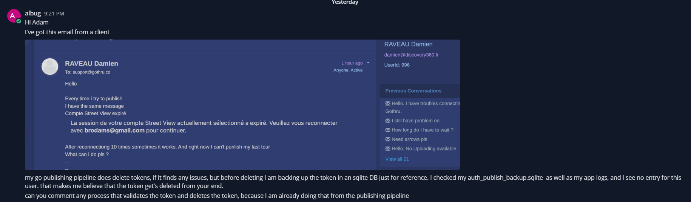

Issues
5
Issues
5
Documentation
4
Generated At
2026-06-01T04:42:55.285284+00:00
Empty
This API has been migrated to the ADR architecture. For more details, please refer to the following document: https://github.com/GoThruMedia/GoThru-API-New/blob/main/docs/v2/auth/logout.md
Empty
This API has been migrated to the ADR architecture. For more details, please refer to the following document: https://github.com/GoThruMedia/GoThru-API-New/blob/main/docs/v2/user/get-account-setting.md
Empty
This API has been migrated to the ADR architecture. For more details, please refer to the following document: https://github.com/GoThruMedia/GoThru-API-New/blob/main/docs/v2/auth/check-session.md
Empty
This API has been migrated to the ADR Architecture. Here are the details: https://github.com/GoThruMedia/GoThru-API-New/blob/main/docs/v2/google-account/check-google-account.md

The “reconnect” message appears when the token_id in the database is invalid or the token's scope does not include “streetviewpublish.”
I've searched the entire codebase, and there isn't a single line of code that updates the token_id without the user's knowledge—in other words, there is no process that would invalidate the token_id. As for updating the scope, this cannot be done directly through the code; all changes require user approval.
It’s possible that when connecting a Street View account to Gothru, the “streetviewpublish” scope wasn’t checked.
POST /v1/auth/logoutAuth: public (no middleware)
Flow:
LogoutController@handle reads sid from request cookie via $request->cookie('sid', ''), builds LogoutDto.LogoutAction::execute(LogoutDto).$dto->sid is empty string, throws MissingSessionCookieException (AUTH.MISSING_SESSION_COOKIE).AuthSessionRepository::deleteSessionById($dto->sid) — deletes the session row from session table.[].sid cookie via setcookie('sid', '', time() - 3600, '/', '.gothru.co', true, true), wraps response:
ResponseEnvelopeHelper::responseMessages([], 'logout_success', 200)AuthDomainException → AuthExceptionHttpMapper::toStatusCode($e) → responseMessages()\Throwable → ResponseEnvelopeHelper::statusCodeFromThrowable($e) → responseMessages()DTO (app/DTOs/Auth/LogoutDto.php):
| Field | Type | Source | Notes |
|---|---|---|---|
sid | string | Cookie: sid | defaults to '' if cookie absent; empty string triggers AUTH.MISSING_SESSION_COOKIE |
Response (200):
{
"statusCode": 200,
"data": {
"messages": "Logout successful"
}
}
Set-Cookie: sid=; expires=<past>; path=/; domain=.gothru.co; Secure; HttpOnlyis set on success.
Errors:
| domainCode | HTTP | Condition |
|---|---|---|
AUTH.MISSING_SESSION_COOKIE | 400 | sid cookie absent or empty |
(fallback \Throwable) | dynamic | ResponseEnvelopeHelper::statusCodeFromThrowable() |
Usage:
curl -X POST https://api.gothru.co/v1/auth/logout \
-H "Cookie: sid={session_id}"
Notes:
sid does not exist in the DB, the delete no-ops and the endpoint still returns 200.LogoutAction succeeds (inside try block).GET /users/account-settingAuth: middleware('auth') — user_id injected into request context by middleware
Flow:
GetAccountSettingController@handle builds GetAccountSettingDto from $request->all().GetAccountSettingAction::execute(GetAccountSettingDto).UserRepository::getAccountSettingByUserId($dto->userId) — queries user_extra_data table for the authenticated user.UserAccountNotFoundDomainException (USER_ACCOUNT.NOT_FOUND).null passthrough for timezone, logo path rewrite from /moderation/ → /profile/).array of account settings.ResponseEnvelopeHelper::encryptResult(['data' => $data], messages, 200)UserAccountDomainException → UserAccountExceptionHttpMapper::toStatusCode($e) → responseMessages()\Throwable → ResponseEnvelopeHelper::statusCodeFromThrowable($e) → responseMessages()DTO (app/DTOs/User/Account/GetAccountSettingDto.php):
| Field | Type | Source | Notes |
|---|---|---|---|
userId | int | request.user_id | injected by auth middleware; cast to int, defaults to 0 if absent |
Response (200):
{
"statusCode": 200,
"data": {
"messages": "Data retrieved successfully",
"cry": "<encrypted_payload>",
"ls": "<iv>",
"e4": "<tag>"
}
}
Decrypted payload shape:
{ "data": { "auto_nadir": true, "gps": false, "show_info_box": true, "show_info_reached_limit": false, "show_google_msg": true, "show_logo_stats": false, "newsletter": true, "stats_language": "en", "company_logo": "/profile/logo.png", "timezone": "Asia/Jakarta" } }
company_logoisnullif no logo set.timezoneisnullif empty/unset.
Errors:
| domainCode | HTTP | Condition |
|---|---|---|
USER_ACCOUNT.NOT_FOUND | 409 | No user_extra_data row found for user_id |
(fallback \Throwable) | dynamic | ResponseEnvelopeHelper::statusCodeFromThrowable() |
Usage:
curl -X GET https://api.gothru.co/users/account-setting \
-H "Authorization: Bearer {token}"
Notes:
auto_nadir, gps, etc.) are stored as '0'/'1' strings in DB — coerced to PHP bool in Action.company_logo path is rewritten: /moderation/ → /profile/ to expose the public profile URL.encryptResult) regardless of any request header.App\Class dependency at any layer.POST /v1/auth/check-sessionAuth: public (no middleware — session validated manually in Action)
Flow:
CheckSessionController@handle reads sid from Cookie: sid via $request->cookie('sid', '') and ec from query/body via $request->input('ec', ''), builds CheckSessionDto.CheckSessionAction::execute(CheckSessionDto).AuthSessionRepository::getSessionById($dto->sid) — if null, throws SessionNotFoundException (AUTH.SESSION_NOT_FOUND).sessdata if it contains %22 (percent-encoded).unserialize($sessData) and extracts $sessionData['auth'].expiry < time() — if expired, throws SessionExpiredException (AUTH.SESSION_EXPIRED).user_id from session data, calls AuthSessionRepository::getUserById($userId) — if null, throws UserNotFoundException (AUTH.USER_NOT_FOUND).verified_email === 0, throws UserNotVerifiedException (AUTH.USER_NOT_VERIFIED).is_active === 0, throws AccountBlockedException (AUTH.ACCOUNT_BLOCKED).HelperClass::createToken(['email' => $user['email']]) to generate JWT — returns ['token' => string, 'sid' => string].ec param:
ec !== 'false' (default) → ResponseEnvelopeHelper::encryptResult(['token' => ..., 'sid' => ...], 'data_retrieved', 200)ec === 'false' → ResponseEnvelopeHelper::responseMessages(['token' => ..., 'sid' => ...], 'data_retrieved', 200)AuthDomainException → AuthExceptionHttpMapper::toStatusCode($e) → responseMessages()\Throwable → ResponseEnvelopeHelper::statusCodeFromThrowable($e) → responseMessages()DTO (app/DTOs/Auth/CheckSessionDto.php):
| Field | Type | Source | Notes |
|---|---|---|---|
sid | string | Cookie: sid | defaults to '' if absent |
ec | string | query/body ec | defaults to ''; pass "false" to get plain response |
Response (200) — encrypted (default, ec omitted or ec != 'false'):
{
"statusCode": 200,
"data": {
"messages": "Data retrieved successfully",
"cry": "<encrypted payload>",
"ls": "<iv>",
"e4": "<tag>"
}
}
Response (200) — plain (ec=false):
{
"statusCode": 200,
"data": {
"messages": "Data retrieved successfully",
"token": "<jwt>",
"sid": "<session_id>"
}
}
Errors:
| domainCode | HTTP | Condition |
|---|---|---|
AUTH.SESSION_NOT_FOUND | 401 | sid cookie not found in session table |
AUTH.SESSION_EXPIRED | 401 | session expiry timestamp < current time |
AUTH.USER_NOT_FOUND | 409 | user_id in session data has no matching user row |
AUTH.USER_NOT_VERIFIED | 422 | user verified_email === 0 |
AUTH.ACCOUNT_BLOCKED | 422 | user is_active === 0 |
(fallback \Throwable) | dynamic | ResponseEnvelopeHelper::statusCodeFromThrowable() |
Usage:
# Encrypted response (default)
curl -X POST https://api.gothru.co/v1/auth/check-session \
-H "Cookie: sid={session_id}"
# Plain response
curl -X POST "https://api.gothru.co/v1/auth/check-session?ec=false" \
-H "Cookie: sid={session_id}"
Notes:
Authorization header required — auth is entirely cookie-based.sessdata is a PHP-serialized string; URL-decode runs only when %22 is detected (legacy encoding).HelperClass::createToken() — legacy dependency; pending extraction to JwtHelper / AuthTokenService.HelperClass::createToken() in Action layer.GET /users/check-google-accountAuth: middleware('auth')
Flow:
CheckGoogleAccountController@handle builds CheckGoogleAccountDto from request->user_id and request->email.CheckGoogleAccountAction::execute(CheckGoogleAccountDto).email — if empty string, throws EmailRequiredException (GOOGLE_ACCOUNT.EMAIL_REQUIRED).GoogleAccountRepository::findRefreshToken($userId, $email) — queries auth_publish by user_id + email; if no record, throws EmailNotFoundException (GOOGLE_ACCOUNT.EMAIL_NOT_FOUND).https://oauth2.googleapis.com/token with client_id, client_secret, refresh_token, grant_type=refresh_token.valid=true, message "Token is valid" — then checks scope contains streetviewpublish; if missing, flips valid=false, message "Token is valid, but streetviewpublish scope is missing".invalid_grant / unauthorized_client / invalid_request: sets valid=false, message "Token is invalid".array{valid: bool, messages: string}.ResponseEnvelopeHelper::responseMessages(['valid' => $result['valid']], $result['messages'], 200)GoogleAccountDomainException → GoogleAccountExceptionHttpMapper::toStatusCode($e) → responseMessages()\Throwable → ResponseEnvelopeHelper::statusCodeFromThrowable($e) → responseMessages()DTO (app/DTOs/GoogleAccount/CheckGoogleAccountDto.php):
| Field | Type | Source | Notes |
|---|---|---|---|
userId | string | query param user_id | default '' if missing |
email | string | query param email | required — empty triggers 422 |
Response (200):
{
"statusCode": 200,
"data": {
"messages": "Token is valid",
"valid": true
}
}
valid: false+ message"Token is valid, but streetviewpublish scope is missing"— token exchange OK but scope missing.valid: false+ message"Token is invalid"— token rejected by Google.
Errors:
| domainCode | HTTP | Condition |
|---|---|---|
GOOGLE_ACCOUNT.EMAIL_REQUIRED | 422 | email param absent or empty |
GOOGLE_ACCOUNT.EMAIL_NOT_FOUND | 404 | No auth_publish record for user_id + email |
(fallback \Throwable) | dynamic | ResponseEnvelopeHelper::statusCodeFromThrowable() |
Usage:
curl -X GET "https://api.gothru.co/users/check-google-account?email=user@example.com" \
-H "Authorization: Bearer {token}"
Notes:
user_id injected from auth middleware; email is the Google account email to validate.GOOGLE_CLIENT_ID / GOOGLE_CLIENT_SECRET read from env() inside Action — not yet injected via config facade.